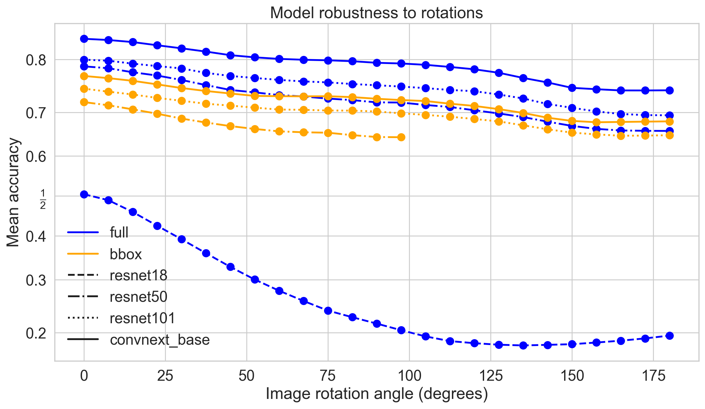
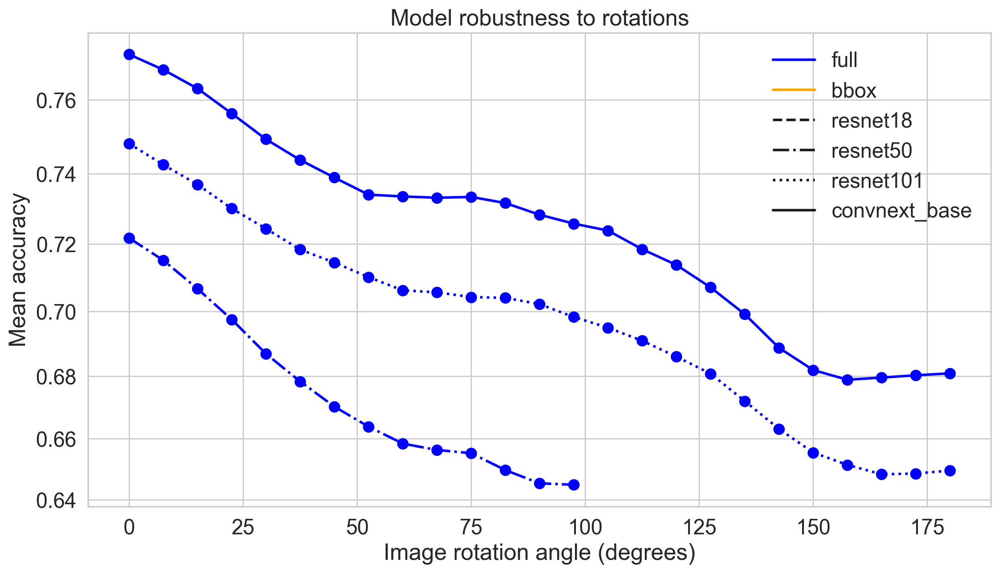
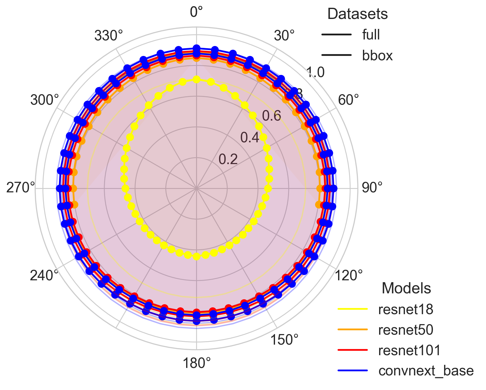
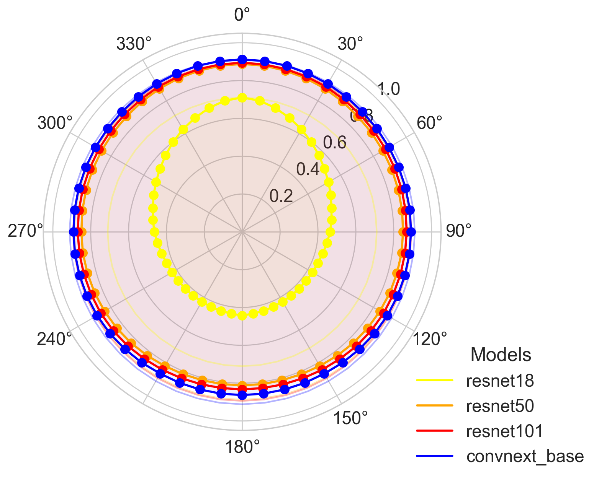
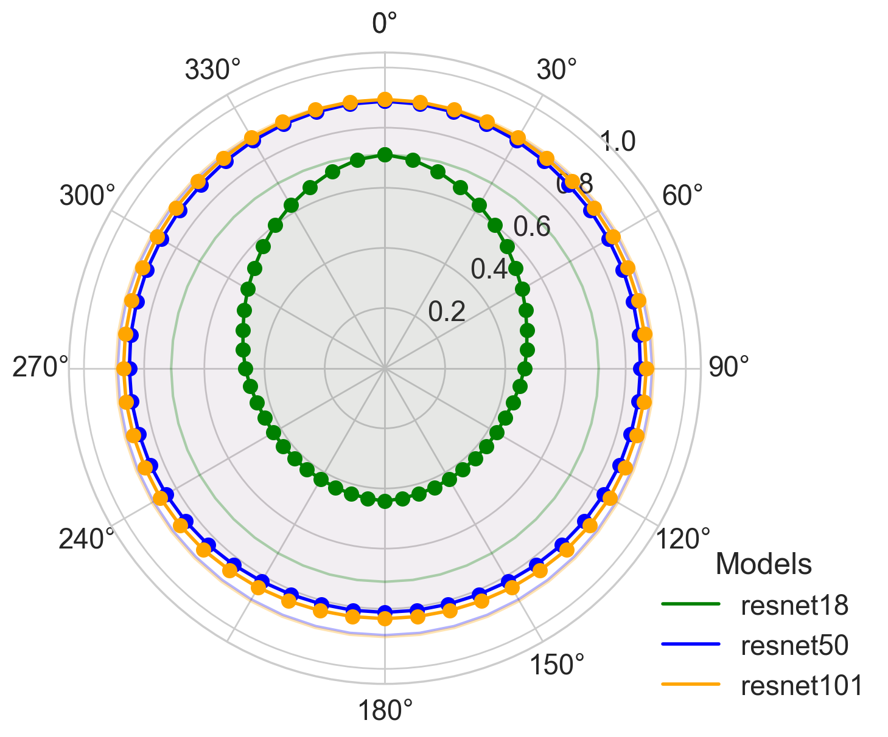

This notebook evaluates the rotational robustness of various baseline (Cartesian) networks. We test how performance degrades as images are rotated by different angles to provide a benchmark for comparison with foveated models (see 37_rotation_attack-after-retraining.ipynb).
Evaluating baseline network robustness across multiple rotation angles¶
[1]:
import retinoto_py as fovea
params_dict = dict(shuffle=False, do_mask=True, do_fovea=False, do_augment=False, batch_size=500)
args = fovea.Params(**params_dict)
# args
[2]:
all_angles = fovea.np.linspace(0, 180, 25)
all_angles
[2]:
array([ 0. , 7.5, 15. , 22.5, 30. , 37.5, 45. , 52.5, 60. ,
67.5, 75. , 82.5, 90. , 97.5, 105. , 112.5, 120. , 127.5,
135. , 142.5, 150. , 157.5, 165. , 172.5, 180. ])
[3]:
all_model_names = fovea.params.all_rn_model_names
all_model_names.append('convnext_base')
all_model_names
[3]:
['resnet18', 'resnet50', 'resnet101', 'convnext_base']
[4]:
all_datasets = fovea.params.all_datasets
all_datasets
[4]:
['full', 'bbox']
[5]:
delta_angle = all_angles[1] - all_angles[0]
all_angles_min = all_angles - delta_angle / 2
# all_angles_min, all_angles_min + delta_angle, delta_angle
[ ]:
for dataset in all_datasets:
for model_name in all_model_names:
npz_filename = args.data_cache / f'17_rotation-attack_name={model_name}_dataset={dataset}.npz'
print(f'Rotation attack for {model_name=} and {dataset=} \t {npz_filename=}')
%ls -l {npz_filename}
# %rm {npz_filename} # FORCING RECOMPUTE
if npz_filename.exists():
with fovea.np.load(npz_filename) as data:
attack_angle = data['attack_angle']
attack_success = data['attack_success']
all_results = data['results']
else:
args = fovea.Params(**params_dict, model_name=model_name)
model = fovea.load_model(args)
model.eval()
VAL_DATA_DIR = args.DATAROOT / f'Imagenet_{dataset}' / 'val'
val_dataset = fovea.get_dataset(args, VAL_DATA_DIR)
val_loader = fovea.get_loader(args, val_dataset)
# https://pytorch.org/docs/stable/generated/torch.nn.CrossEntropyLoss.html
criterion = fovea.torch.nn.CrossEntropyLoss(reduction='none')
# dataset_len = len(val_loader.dataset)
all_results = fovea.np.empty((len(all_angles), len(val_loader.dataset)))
all_logits = fovea.np.empty((len(all_angles), len(val_loader.dataset), len(val_dataset.classes)))
all_losses = fovea.np.empty((len(all_angles), len(val_loader.dataset)))
all_labels = []
outer_progress = fovea.tqdm(
enumerate(zip(all_angles_min, all_angles_min + delta_angle)),
total=len(all_angles_min),
desc="Validating Angles",
leave=False
)
for i_angle, (angle_min, angle_max) in outer_progress:
val_dataset = fovea.get_dataset(args, VAL_DATA_DIR,
angle_min=angle_min, angle_max=angle_max)
val_loader = fovea.get_loader(args, val_dataset)
image_count = 0
for images, true_idxs in fovea.tqdm(val_loader, desc=f"Angle [{.5*(angle_min+angle_max):.1f}°]", position=1, leave=False):
images = images.to(args.device)
true_idxs = true_idxs.to(args.device)
# Get predictions (no need for gradients)
with fovea.torch.no_grad():
if i_angle==0: all_labels.extend([l.item() for l in true_idxs])
outputs = model(images)
all_logits[i_angle, image_count:(image_count + images.size(0)), :] = outputs.cpu().numpy()
_, predicted_labels = fovea.torch.max(outputs, dim=1)
correct_predictions_in_batch = (predicted_labels == true_idxs).cpu().numpy()
all_results[i_angle, image_count:image_count + images.size(0)] = correct_predictions_in_batch
loss = criterion(outputs, true_idxs)
all_losses[i_angle, image_count:(image_count + images.size(0))] = loss.cpu().numpy()
image_count += images.size(0)
outer_progress.set_postfix(last_acc=f"{all_results[i_angle, :].mean():.4f}")
attack_angle = all_losses[:, :len(all_labels)].argmax(axis=0)
attack_idx = all_logits[attack_angle[:len(all_labels)], fovea.np.arange(len(all_labels)), :].argmax(axis=1)
attack_success = (attack_idx == all_labels)
fovea.np.savez(npz_filename,
attack_angle=attack_angle,
attack_success=attack_success,
results=all_results)
Rotation attack for model_name='resnet18' and dataset='full' npz_filename=PosixPath('cached_data/17_rotation-attack_name=resnet18_dataset=full.npz')
ls: cached_data/17_rotation-attack_name=resnet18_dataset=full.npz: No such file or directory
Rotation attack for model_name='resnet50' and dataset='full' npz_filename=PosixPath('cached_data/17_rotation-attack_name=resnet50_dataset=full.npz')
ls: cached_data/17_rotation-attack_name=resnet50_dataset=full.npz: No such file or directory
Rotation attack for model_name='resnet101' and dataset='full' npz_filename=PosixPath('cached_data/17_rotation-attack_name=resnet101_dataset=full.npz')
ls: cached_data/17_rotation-attack_name=resnet101_dataset=full.npz: No such file or directory
Rotation attack for model_name='convnext_base' and dataset='full' npz_filename=PosixPath('cached_data/17_rotation-attack_name=convnext_base_dataset=full.npz')
ls: cached_data/17_rotation-attack_name=convnext_base_dataset=full.npz: No such file or directory
Rotation attack for model_name='resnet18' and dataset='bbox' npz_filename=PosixPath('cached_data/17_rotation-attack_name=resnet18_dataset=bbox.npz')
ls: cached_data/17_rotation-attack_name=resnet18_dataset=bbox.npz: No such file or directory
/Users/laurent/sdrive_cnrs/hot_from_git/Retinotopy_project/retinoto_py/.venv/lib/python3.14/site-packages/numpy/_core/_methods.py:132: RuntimeWarning: overflow encountered in reduce
ret = umr_sum(arr, axis, dtype, out, keepdims, where=where)
/Users/laurent/sdrive_cnrs/hot_from_git/Retinotopy_project/retinoto_py/.venv/lib/python3.14/site-packages/numpy/_core/_methods.py:132: RuntimeWarning: invalid value encountered in reduce
ret = umr_sum(arr, axis, dtype, out, keepdims, where=where)
Rotation attack for model_name='resnet50' and dataset='bbox' npz_filename=PosixPath('cached_data/17_rotation-attack_name=resnet50_dataset=bbox.npz')
ls: cached_data/17_rotation-attack_name=resnet50_dataset=bbox.npz: No such file or directory
Rotation attack for model_name='resnet101' and dataset='bbox' npz_filename=PosixPath('cached_data/17_rotation-attack_name=resnet101_dataset=bbox.npz')
ls: cached_data/17_rotation-attack_name=resnet101_dataset=bbox.npz: No such file or directory
Rotation attack for model_name='convnext_base' and dataset='bbox' npz_filename=PosixPath('cached_data/17_rotation-attack_name=convnext_base_dataset=bbox.npz')
ls: cached_data/17_rotation-attack_name=convnext_base_dataset=bbox.npz: No such file or directory
Analysis: Mean accuracy vs. rotation angle¶
[ ]:
all_results.shape
<<<<<<< local <modified: text/plain>
(25, 80475)
=======
>>>>>>> remote <removed>
[ ]:
all_results.mean(axis=1)
array([0.77176763, 0.76784094, 0.76296987, 0.75638397, 0.74947499,
0.74380864, 0.73893756, 0.73415346, 0.73364399, 0.73328363,
0.7335073 , 0.73178006, 0.72844983, 0.72590245, 0.72390183,
0.718484 , 0.71387387, 0.70720099, 0.69911153, 0.68881019,
0.68188879, 0.67884436, 0.6795278 , 0.6802361 , 0.68085741])
[ ]:
all_model_names_ls = fovea.params.all_rn_model_names_ls
all_model_names_ls.extend('o')
all_model_names_ls = [ 'dashed', 'dashdot', 'dotted', 'solid', ]
all_model_names_color = ['yellow', 'orange', 'red', 'blue']
all_model_names_ls
[ ]:
# --- Create the Plot ---
fig, ax = fovea.plt.subplots()
for dataset, color in zip(fovea.params.all_datasets, fovea.params.all_datasets_color):
for model_name, ls in zip(all_model_names, all_model_names_ls):
npz_filename = args.data_cache / f'17_rotation-attack_name={model_name}_dataset={dataset}.npz'
with fovea.np.load(npz_filename) as data:
all_results = data['results']
# `all_results` is a boolean array (True/False for correct/incorrect)
# To compute accuracy, average over the image axis (axis=1)
mean_accuracy_per_angle = all_results.mean(axis=1)
# Plot mean accuracy vs. reference angle
ax.plot(all_angles, mean_accuracy_per_angle, marker='o', linestyle=ls, color=color, lw=2, markersize=8)
# --- Finalize the Plot ---
ax.set_xlabel("Image rotation angle (degrees)")
ax.set_ylabel("Mean accuracy")
ax.set_title("Model robustness to rotations")
# ax.set_ylim(0, 1.05) # Ensure y axis spans 0 to 1
ax.set_yscale('logit') # Ensure y axis spans 0 to 1
# Build legends
for dataset, color in zip(fovea.params.all_datasets, fovea.params.all_datasets_color):
ax.plot([], [], linestyle='-', color=color, lw=2, label=dataset)
for model_name, ls in zip(all_model_names, all_model_names_ls):
ax.plot([], [], linestyle=ls, color='k', lw=2, markersize=8, label=model_name)
ax.legend(frameon=False)
<<<<<<< local <modified: text/plain>
<matplotlib.legend.Legend at 0x14a1f16a0>
=======
>>>>>>> remote <removed>

[ ]:
# --- Create the Plot ---
fig, ax = fovea.plt.subplots()
for dataset, color in zip(['bbox'], fovea.params.all_datasets_color):
for model_name, ls in zip(all_model_names, all_model_names_ls):
npz_filename = args.data_cache / f'17_rotation-attack_name={model_name}_dataset={dataset}.npz'
with fovea.np.load(npz_filename) as data:
all_results = data['results']
# `all_results` is a boolean array (True/False for correct/incorrect)
# To compute accuracy, average over the image axis (axis=1)
mean_accuracy_per_angle = all_results.mean(axis=1)
# Plot mean accuracy vs. reference angle
ax.plot(all_angles, mean_accuracy_per_angle, marker='o', linestyle=ls, color=color, lw=2, markersize=8)
# --- Finalize the Plot ---
ax.set_xlabel("Image rotation angle (degrees)")
ax.set_ylabel("Mean accuracy")
ax.set_title("Model robustness to rotations")
# ax.set_ylim(0, 1.05) # Ensure y axis spans 0 to 1
ax.set_yscale('logit') # Ensure y axis spans 0 to 1
# Build legends
for dataset, color in zip(fovea.params.all_datasets, fovea.params.all_datasets_color):
ax.plot([], [], linestyle='-', color=color, lw=2, label=dataset)
for model_name, ls in zip(all_model_names, all_model_names_ls):
ax.plot([], [], linestyle=ls, color='k', lw=2, markersize=8, label=model_name)
ax.legend(frameon=False)
fovea.savefig(fig, name='17_attack', figures_folder=args.figures_folder)

[ ]:
all_angles
[ ]:
all_angles_wrap = fovea.np.hstack((all_angles, fovea.np.mod(all_angles[1:]+180, 360)))
all_angles_wrap
[ ]:
all_angles_wrap_sub = fovea.np.hstack((all_angles[::4], fovea.np.mod(all_angles[::4][1:]+180, 360)))
all_angles_wrap_sub
[ ]:
mean_accuracy_per_angle_wrap = fovea.np.hstack((mean_accuracy_per_angle, mean_accuracy_per_angle[:-1][::-1]))
mean_accuracy_per_angle_wrap
array([0.77176763, 0.76784094, 0.76296987, 0.75638397, 0.74947499,
0.74380864, 0.73893756, 0.73415346, 0.73364399, 0.73328363,
0.7335073 , 0.73178006, 0.72844983, 0.72590245, 0.72390183,
0.718484 , 0.71387387, 0.70720099, 0.69911153, 0.68881019,
0.68188879, 0.67884436, 0.6795278 , 0.6802361 , 0.68085741,
0.6802361 , 0.6795278 , 0.67884436, 0.68188879, 0.68881019,
0.69911153, 0.70720099, 0.71387387, 0.718484 , 0.72390183,
0.72590245, 0.72844983, 0.73178006, 0.7335073 , 0.73328363,
0.73364399, 0.73415346, 0.73893756, 0.74380864, 0.74947499,
0.75638397, 0.76296987, 0.76784094, 0.77176763])
[ ]:
# --- Création du Polar Plot ---
def figure_rotation_attack_polar(all_datasets, all_datasets_color, all_datasets_ls,
all_model_names, all_model_color, all_model_names_ls):
# 1. Créer la figure et l'axe en projection polaire, all_model_names, all_model_names_ls
fig = fovea.plt.figure()
ax = fig.add_subplot(111, polar=True)
# 2. Convertir les angles de degrés en radians (nécessaire pour Matplotlib)
angles_rad = fovea.np.deg2rad(all_angles_wrap)
for dataset, ls in zip(all_datasets, all_datasets_ls):
for model_name, color in zip(all_model_names, all_model_color):
npz_filename = args.data_cache / f'17_rotation-attack_name={model_name}_dataset={dataset}.npz'
with fovea.np.load(npz_filename) as data:
all_results = data['results']
mean_accuracy_per_angle = all_results.mean(axis=1)
mean_accuracy_per_angle_wrap = fovea.np.hstack((mean_accuracy_per_angle, mean_accuracy_per_angle[:-1][::-1]))
ax.plot(angles_rad, fovea.np.sqrt(mean_accuracy_per_angle_wrap), marker='o', linestyle=ls, lw=2, markersize=8, color=color)
ax.fill(angles_rad, fovea.np.sqrt(mean_accuracy_per_angle_wrap), alpha=0.05, color=color)
# Ajouter la ligne de performance de base (angle=0)
# Il faut trouver l'index de l'angle le plus proche de 0
# zero_angle_idx = (fovea.np.abs(all_angles)).argmin()
base_accuracy = mean_accuracy_per_angle_wrap[0] #zero_angle_idx]
# ax.plot(angles_rad[zero_angle_idx], base_accuracy, 'rD', markersize=12, label=f'Performance de base: {base_accuracy:.2f}')
ax.plot(angles_rad, fovea.np.sqrt(base_accuracy)*fovea.np.ones_like(mean_accuracy_per_angle_wrap), linestyle=ls, lw=1.5, alpha=.3, color=color)
dataset_handles = [] # will store the handles for the dataset legend
for dataset, ls in zip(all_datasets, all_datasets_ls):
# Plot an *empty* line – it will never be shown on the figure,
# but it gives us a handle with the right colour.
h, = ax.plot([], [], linestyle=ls, color='k',
lw=2, label=dataset)
dataset_handles.append(h)
model_handles = [] # will store the handles for the model legend
for model_name, color in zip(all_model_names, all_model_color):
# Same idea, but now we vary the line style and keep the colour black.
h, = ax.plot([], [], linestyle='-', color=color,
lw=2, markersize=8, label=model_name)
model_handles.append(h)
if len(all_datasets) > 1:
# First legend – the *datasets* (coloured solid lines)
leg_datasets = ax.legend(handles=dataset_handles,
labels=all_datasets,
title='Datasets',
loc='upper left',
bbox_to_anchor=(.85, 1.1), # just outside the axes
frameon=False)
if len(all_model_names) > 1:
# Second legend – the *models* (different line‑styles)
leg_models = ax.legend(handles=model_handles,
labels=all_model_names,
title='Models',
loc='upper left',
bbox_to_anchor=(.9, 0.25), # lower than the first box
frameon=False)
# IMPORTANT: add the first legend back to the Axes,
# otherwise it would be overwritten by the second call.
if len(all_datasets) > 1:
ax.add_artist(leg_datasets)
# ax.legend(loc='lower left', bbox_to_anchor=(1.05, 1.1))
# --- Finalisation du Graphique Polaire ---
# Définir la direction du zéro (haut) et le sens horaire/anti-horaire
ax.set_theta_zero_location('N')
ax.set_theta_direction(-1) # -1 pour horaire, 1 pour anti-horaire
# Définir les étiquettes des angles sur le cercle
# S'assurer que les étiquettes sont alignées
ax.set_thetagrids(fovea.np.degrees(angles_rad), labels=[f'{a:.0f}°' for a in all_angles_wrap])
# Définir les limites et les étiquettes de l'axe radial (l'accuracy)
# ax.set_xlim(0)
# ax.set_yscale('logit')
ax.set_ylim(0, 1.05)
# ax.set_ylim(0)
# ax.set_ylabel("Accuracy moyenne", labelpad=30) # labelpad pour éloigner l'étiquette du graphique
ax.set_rlabel_position(45) # Positionner l'étiquette de l'axe radial
ax.set_xticks(fovea.np.deg2rad(all_angles_wrap_sub))
# ax.set_yticks([])
# Ajouter un titre
# ax.set_title(f"Robustesse du modèle ({args.model_name}) aux rotations\n(Accuracy vs. Angle)", pad=20)
return fig, ax
fig, ax = figure_rotation_attack_polar(fovea.params.all_datasets, fovea.params.all_datasets_color, fovea.params.all_datasets_ls, all_model_names, all_model_names_color, all_model_names_ls)
/Users/laurent/sdrive_cnrs/hot_from_git/Retinotopy_project/retinoto_py/.venv/lib/python3.14/site-packages/numpy/_core/_methods.py:132: RuntimeWarning: overflow encountered in reduce
ret = umr_sum(arr, axis, dtype, out, keepdims, where=where)
/Users/laurent/sdrive_cnrs/hot_from_git/Retinotopy_project/retinoto_py/.venv/lib/python3.14/site-packages/numpy/_core/_methods.py:132: RuntimeWarning: invalid value encountered in reduce
ret = umr_sum(arr, axis, dtype, out, keepdims, where=where)
/var/folders/qt/n82pbkv93fjb7bpt0pj1992w0000gn/T/ipykernel_53956/774880786.py:20: RuntimeWarning: invalid value encountered in sqrt
ax.plot(angles_rad, fovea.np.sqrt(mean_accuracy_per_angle_wrap), marker='o', linestyle=ls, lw=2, markersize=8, color=color)
/var/folders/qt/n82pbkv93fjb7bpt0pj1992w0000gn/T/ipykernel_53956/774880786.py:21: RuntimeWarning: invalid value encountered in sqrt
ax.fill(angles_rad, fovea.np.sqrt(mean_accuracy_per_angle_wrap), alpha=0.05, color=color)
/var/folders/qt/n82pbkv93fjb7bpt0pj1992w0000gn/T/ipykernel_53956/774880786.py:27: RuntimeWarning: invalid value encountered in sqrt
ax.plot(angles_rad, fovea.np.sqrt(base_accuracy)*fovea.np.ones_like(mean_accuracy_per_angle_wrap), linestyle=ls, lw=1.5, alpha=.3, color=color)

[ ]:
fig, ax = figure_rotation_attack_polar(fovea.params.all_datasets[:1], fovea.params.all_datasets_color[:1], fovea.params.all_datasets_ls, all_model_names, all_model_names_color, all_model_names_ls)

[ ]:
fig, ax = figure_rotation_attack_polar(fovea.params.all_datasets[:1], fovea.params.all_datasets_color[:1], fovea.params.all_datasets_ls, all_model_names, ['green', 'blue', 'orange'], ['-', '-', '-'])
# fovea.savefig(fig, name='17_attack', figures_folder=args.figures_folder)
<<<<<<< local <modified: >
/var/folders/qt/n82pbkv93fjb7bpt0pj1992w0000gn/T/ipykernel_53956/774880786.py:55: UserWarning: Mismatched number of handles and labels: len(handles) = 3 len(labels) = 4
leg_models = ax.legend(handles=model_handles,
=======
>>>>>>> remote <removed>

analysis: per image rotation attack¶
[ ]:
attack_angle.shape, attack_success.shape
[ ]:
fovea.np.unique(attack_angle)
[ ]:
all_angles
[ ]:
attack_success
<<<<<<< local <modified: text/plain>
array([ True, False, True, ..., True, True, True], shape=(80000,))
=======
>>>>>>> remote <removed>
[ ]:
attack_success.mean()
<<<<<<< local <modified: text/plain>
np.float64(0.58965)
=======
>>>>>>> remote <removed>
[ ]:
all_model_names
[ ]:
fovea.params.all_datasets
[ ]:
for dataset in fovea.params.all_datasets:
for model_name in all_model_names:
npz_filename = args.data_cache / f'17_rotation-attack_name={model_name}_dataset={dataset}.npz'
with fovea.np.load(npz_filename) as data:
attack_success = data['attack_success']
print(npz_filename, attack_success.mean())
<<<<<<< local <modified: >
cached_data/17_rotation-attack_name=resnet18_dataset=full.npz 0.07544
cached_data/17_rotation-attack_name=resnet50_dataset=full.npz 0.53374
cached_data/17_rotation-attack_name=resnet101_dataset=full.npz 0.58204
cached_data/17_rotation-attack_name=convnext_base_dataset=full.npz 0.65474
cached_data/17_rotation-attack_name=resnet18_dataset=bbox.npz 0.076075
cached_data/17_rotation-attack_name=resnet50_dataset=bbox.npz 0.4754125
cached_data/17_rotation-attack_name=resnet101_dataset=bbox.npz 0.5353
cached_data/17_rotation-attack_name=convnext_base_dataset=bbox.npz 0.58965
=======
>>>>>>> remote <removed>
[ ]:
attack_angle
<<<<<<< local <modified: text/plain>
array([24, 22, 24, ..., 8, 18, 17], shape=(80000,))
=======
>>>>>>> remote <removed>